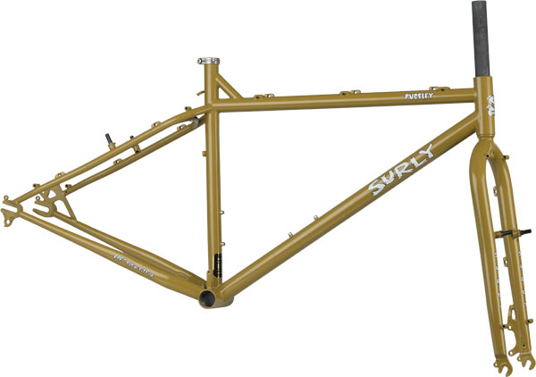

Pugsley Frame
The premise behind Pugsley’s design is the allowance of tires with a larger-than-average footprint. It was created to go where other bikes may flounder. Our frame and fork will accept 4" tires on 26" rims. The flotation and traction gained by using large volume, low-pressure tires (we highly recommend the Surly Endomorph 3.7 tires) can get you over and through otherwise unrideable terrain: ice, snow, sand, mud, wet rocks and roots. In many conditions, bigger is better.
There are design problems associated with using wide tires, however: the tire can rub on the chain, the chainstays, and the front derailleur. We’ve addressed these issues by using a 100mm-wide bottom bracket shell and providing an E-type front derailleur mount. The 100mm shell allows us to widen the chainstays for more tire/frame clearance, and it moves the chainrings outward for more chain/tire clearance. An E-type bottom bracket-mounted front derailleur positions the derailleur cage outboard of the tire. In order to maintain a good chainline with this setup, we offset the rear hub 17.5mm to the drive side...the same distance that the chainrings moved outward (compared to the chainline of a bike using a 68mm or 73mm bottom bracket shell). The result is a straight chainline and the ability to use a standard drivetrain (compact mountain triple crankset with a full cassette of cogs on a 135mm-spaced hub) without chain/tire/front derailleur interference. Pugsley has horizontal rear drops (sometimes called track ends) with a derailleur hanger, so you can set it up as a singlespeed or internally-geared rig if you don’t want to use derailleurs.
Note: We offer a new offset Large Marge rim extrusion to give you more disc-side dish and more even spoke tension. Use these offset Large Marge rims on the Pugsley. Non-Surly rims, intended for use in Pugsley wheels, should be drilled 6-12mm offset to the drive side.
Now, think about trying to shove a 4" (102mm) tire through the dropouts of a fork designed to accept a standard 100mm-wide front hub. Add a disc brake caliper to narrow the gap. It all adds up to a big hassle when trying to get a wheel, with an inflated tire, in and out of the fork. We solved the problem by designing the fork to use a wider hub. Pugsley uses a 135mm hub on the rear, so it seemed logical to use a 135mm hub on the front, too. We offset the fork the same distance as the rear end, so the wheels will be interchangeable. Why would you want interchangeable wheels? If you’re using your rig as a single-speed, differently-sized freewheels can be installed on each wheel to give you high and low gear options. You may want a fixed-gear/freewheel option, in case there is a risk of your freewheel seizing up or not engaging when riding in extreme conditions. A fixed cog always moves you forward, and it can be used to slow you down if you choose not to use brakes or if your brakes stop working. If you use the same model of hub front and rear, you’ll only use 1 or 2 lengths of spokes versus 3 or 4…less confusion and fewer spare spokes to carry if you’re on a remote tour. If you decide that you don’t want to use the Pugsley fork, our Instigator fork (as well as many 100mm-travel suspension forks) has the same axle-to-crown length.
We provide disc brake tabs on the frame and fork. If you’re using discs, you’ll have to use rear brakes or rear brake adapters on the frame and the fork. Absorb that for a second: rear hub and rear brake on both ends of the bike. Not everybody needs or wants disc brakes, so we also provide 120mm-spaced cantilever pivots for those of you who want to run traditional cantilevers. Keep in mind you’ll need to use our Large Marge rims to use these types of brakes. The pivots are thread-in type, so they’re removable if you don’t want ‘em on there. Linear-pull brakes will not work with large-volume tires due to crossover wire interference.
Who should ride Pugsley? Hunters of all types (animal, mineral, or vegetable), beach/desert riders, snow/ice riders, wilderness explorers, and anybody else in need of a bike that will provide extra stability, traction, and floatation when the terrain gets loose and unpredictable. If you fall into any one of those categories, you should ride a Pugsley.
Colors: Curry Squirt




Geometry

| Switch to mm | small | medium | large | x-large | |
|---|---|---|---|---|---|
| Seat Tube Length (Center-Top) |
16.0 | 18.0 | 20.0 | 22.0 | |
| Top Tube Length (Center-Center) |
21.8 | 22.4 | 23.1 | 24.0 | |
| Effective Top Tube Length (Center-Center) |
22.9 | 23.5 | 24.0 | 24.6 | |
| Head Tube Angle | 70.5 | 70.5 | 70.5 | 70.5 | |
| Seat Tube Angle | 72.0 | 72.0 | 72.0 | 72.0 | |
| BB Drop | 2.2 | 2.2 | 2.2 | 2.2 | |
| Chainstay Length | 17.6 | 17.6 | 17.6 | 17.6 | |
| Wheelbase | 42.0 | 42.6 | 43.2 | 43.8 | |
| Standover Height | 29.8 | 31 | 32.3 | 33.6 | |
| Head Tube Length | 4.0 | 4.3 | 5.1 | 5.9 | |
| Fork Length | 17.6 | 17.6 | 17.6 | 17.6 | |
| Fork Rake | 1.7 | 1.7 | 1.7 | 1.7 | |
| Frame Weight | 5.56 | 5.66 | 5.88 | 6.1 |
Standover height measured using Surly Endomorph 3.7” tire measuring 740mm in diameter.
| Switch to inches | small | medium | large | x-large | |
|---|---|---|---|---|---|
| Seat Tube Length (Center-Top) |
406.4 | 457.2 | 508.0 | 558.8 | |
| Top Tube Length (Center-Center) |
552.5 | 569.5 | 587.3 | 608.6 | |
| Effective Top Tube Length (Center-Center) |
580.9 | 595.7 | 610.1 | 625.0 | |
| Head Tube Angle | 70.5 | 70.5 | 70.5 | 70.5 | |
| Seat Tube Angle | 72.0 | 72.0 | 72.0 | 72.0 | |
| BB Drop | 55.0 | 55.0 | 55.0 | 55.0 | |
| Chainstay Length | 448.1 | 448.1 | 448.1 | 448.1 | |
| Wheelbase | 1067.3 | 1082.3 | 1097.3 | 1112.6 | |
| Standover Height | 758 | 786.5 | 819.6 | 853 | |
| Head Tube Length | 102.0 | 110.0 | 130.0 | 150.0 | |
| Fork Length | 447.0 | 447.0 | 447.0 | 447.0 | |
| Fork Rake | 43.0 | 43.0 | 43.0 | 43.0 | |
| Frame Weight | 5.56 | 5.66 | 5.88 | 6.1 |
Standover height measured using Surly Endomorph 3.7” tire measuring 740mm in diameter.
Frame Highlights
| Tubing | 100% Surly 4130 CroMoly steel. Main triangle double-butted. TIG-welded |
|---|---|
| Rear dropouts | Surly horizontal dropouts with derailleur hanger, 135mm-spaced, offset 17.5mm |
| Brake compatibility | 51mm IS disc mounts (on the frame and fork) or traditional cantilevertype rim brakes (120mm spaced, for use with Large Marge rims) |
| Braze-ons | Cantilever bosses with removable pivots, dual water bottle mounts, toptube cable housing guides for use with continuous housing, fender and rack eyelets |
| Seatpost clamp diameter | 27.2mm |
| Seatpost clamp | 30mm Surly stainless, included. Silver |
| Headset | 1-1/8" threadless |
| Front derailleur | E-type |
| Bottom bracket shell | 100mm wide, 1.37" x 24t |
| Chainring clearance | Compact triple: 22-32-44t |
| Fork | Suspension-corrected (100mm travel)…447mm axle to crown, tapered straight blade, 4130 CroMoly. IS rear disc mount and removable cantilever pivots spaced 120mm. 135mm-spaced dropouts, 17.5mm offset |
| Color | Split Pea Green |
| Weight | 18" = 2570g (5.6 lbs) Fork: - uncut = 1114g (2.52 lbs) |